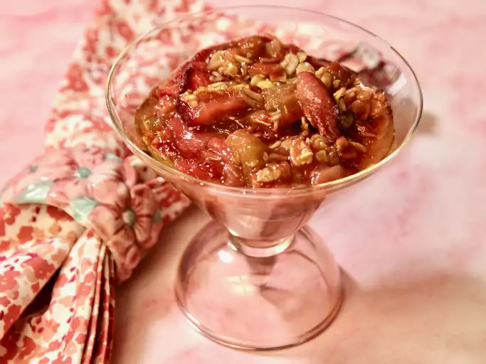

Strawberry Rhubarb Crunch

Description
This fruit strawberry rhubarb crisp, complete with a crunchy oat topping, is easy to make and will satisfy any sweet tooth.
Ingredients
Fruit Layer
- 3 cups sliced fresh strawberries
- 3 cups diced rhubarb
- 1 cup white sugar
- 3 tablespoons all-purpose flour
Crunch toppings
- 1 1/2 cups all-purpose flour
- 1 cup packed brown sugar
- 1 cup rolled oats
- 1 cup butter
Steps
- Preheat the oven to 190 degrees C
- Make the fruit layer: Mix strawberries, rhubarb, white sugar, and flour together in a large bowl. Place the mixture in a 9x13-inch baking dish.
- Make the topping: Combine 1 1/2 cups flour, brown sugar, oats, and butter and mix until crumbly. You may want to use a pastry cutter for this. Sprinkle on top of the rhubarb and strawberry layer
- Bake in the preheated oven until crisp and lightly browned, about 45 minutes